1-01
原题
一物体作简谐运动的曲线如图10-1所示，试求其谐振动表达式。
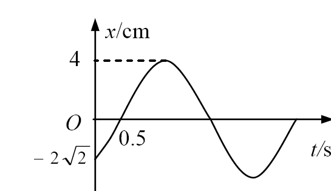
知识点
从振动曲线读取振幅、初相位与周期。
展开解答与答案
图示 A=4 cm，x(0)=−2√2 cm，且初速度为正，故 cosφ=−√2/2、sinφ<0，取 φ=−3π/4。第一次向上通过平衡位置发生在 t=0.5 s，相位由 −3π/4 增至 −π/2，故 ω×0.5=π/4，ω=π/2 rad/s，T=4 s。 答案：x=0.04 cos(πt/2−3π/4) m。
五个单元65道原题。先自己列式，再展开解答。题干与原有资料保持一致；缺图、条件不足的说明完整保留。
没有找到，换个题号或关键词试试。
一物体作简谐运动的曲线如图10-1所示，试求其谐振动表达式。

从振动曲线读取振幅、初相位与周期。
图示 A=4 cm，x(0)=−2√2 cm，且初速度为正，故 cosφ=−√2/2、sinφ<0，取 φ=−3π/4。第一次向上通过平衡位置发生在 t=0.5 s，相位由 −3π/4 增至 −π/2，故 ω×0.5=π/4，ω=π/2 rad/s，T=4 s。 答案：x=0.04 cos(πt/2−3π/4) m。
一质量为0.02kg的弹簧振子沿x轴作谐振动，振幅为0.12m，周期为2s。当t=0时，振子位于0.06m处，并向x轴正方向运动，试求：（1）试用旋转矢量法确定初相位并写出谐振表达式；（2）t=0.5s时的位置、速度和加速度；（3）从x=−0.06m处向x轴负方向运动再回到平衡位置所需时间。
相量转角与经过位置的时间。
ω=π rad/s；cosφ=0.06/0.12=1/2，v₀>0 要求 sinφ<0，因此 φ=−π/3。 （1）x=0.12 cos(πt−π/3) m。 （2）t=0.5 s 时相位为 π/6：x=0.06√3 m≈0.1039 m；v=−0.06π m/s≈−0.1885 m/s；a=−0.06√3π² m/s²≈−1.026 m/s²。 （3）从 x=−A/2 且 v<0 的相位 2π/3，沿相位增大方向至下一次 x=0 的相位 3π/2，Δt=(3π/2−2π/3)/π=5/6 s。
质量为0.01kg的物体，以振幅1.0×10⁻²m作简谐运动，其最大加速度为4.0m/s²。求：（1）振动的周期；（2）物体通过平衡位置时的总能量和动能；（3）当物体的位移大小为振幅的一半时，动能和势能各占总能量的多少？
aₘ=ω²A、机械能守恒。
ω=√(4.0/0.010)=20 rad/s。 （1）T=2π/20=0.314 s。 （2）E=½mω²A²=2.0×10⁻⁴ J；平衡位置势能取零，此时 Eₖ=E=2.0×10⁻⁴ J。 （3）|x|=A/2 时 Eₚ/E=1/4，Eₖ/E=3/4。
一弹簧振子作简谐振动，振幅A=0.20m，如果弹簧的劲度系数k=2.0N/m，所系的物体质量m=0.50kg，求：（1）当动能和势能相等时，物体的位移是多少？（2）设t=0时，物体在正最大位移处，则在一个周期内达到动能和势能相等处所需的时间是多少？
Eₖ=Eₚ=E/2。
由 ½kx²=¼kA²，x=±A/√2=±0.1414 m。ω=√(k/m)=2 rad/s，x=0.20 cos2t。cos²2t=1/2；一个周期 T=π s 内，四个时刻分别为 π/8、3π/8、5π/8、7π/8 s，即约 0.3927、1.1781、1.9635、2.7489 s。首次到达所需时间为 π/8 s。
一质量为m的小球在一个光滑的半径为R的球形碗底作微小振动，如图所示。设t=0时，θ=0，小球的速度为v₀，并向右运动。求在振幅很小的情况下，小球的谐振动表达式。
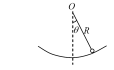
沿圆弧切向建立运动方程。
把小球视为质点，取向右为正，弧长 s=Rθ。mRθ̈=−mg sinθ≈−mgθ，因此 θ̈+(g/R)θ=0。由 θ(0)=0、Rθ̇(0)=v₀，得 θ(t)=v₀/√(gR)·sin[√(g/R)t]。 答案：s(t)=v₀√(R/g) sin[√(g/R)t]；小振幅时水平位移 x≈s。适用条件为 |θ|≪1；光滑接触不按滚动模型处理。
有两个同方向同频率的简谐运动，其合成振动的振幅为0.20m，合振动的相位与第一个振动的相位差为π/6，第一个振动的振幅为0.173m，求第二个振动的振幅及两振动的相位差。
用相量差求未知振动。
令第一个振动相位为0，合振动相位取 +π/6，则第二相量为 0.20e^(iπ/6)−0.173，其实部为 0.20 cos(π/6)−0.173=2.0508×10⁻⁴ m，虚部为0.100 m。 答案：严格按0.173计，A₂=√[(0.20 cos(π/6)−0.173)²+(0.20 sin(π/6))²]≈0.1000002 m；相位差大小约1.56875 rad≈89.8825°。若0.173是0.20 cos30°的三位小数近似，通常记 A₂≈0.100 m、|φ₂−φ₁|≈π/2。题干未说明超前或落后，正负相位差均可能。
两个同方向的简谐振动，其谐振动表达式分别为 x₁=0.05 cos(10t+3π/4)，x₂=0.06 cos(10t+π/4)。（1）求它们合成振动的振幅和初相位；（2）若另有一振动x₃=0.07 cos(10t+φ₃)，则φ₃为多少时，x₁+x₃的振幅最大？又φ₃为多少时，x₂+x₃的振幅最小？
同频相量相加；同相振幅最大，反相振幅最小。
合相量实部 C=(0.06−0.05)/√2，虚部 S=(0.05+0.06)/√2。 （1）A=√(C²+S²)=√0.0061≈0.07810（与原式振幅同单位），φ=atan2(S,C)=arctan11≈1.48014 rad。合振动 x=0.07810 cos(10t+1.48014)。 （2）φ₃=3π/4+2nπ 时 x₁+x₃ 振幅最大，为0.12；φ₃=5π/4+2nπ 时 x₂+x₃ 振幅最小，为0.01，n为整数。原图未给振幅单位，不额外补设单位。
图表示两个同方向、同频率的简谐振动余弦曲线，其角频率为ω。分别求出（a）和（b）情形时：（1）合振动振幅；（2）合振动的振动表达式。 原图未提供。
同频振动用相量相加：C=ΣAᵢ cosφᵢ，S=ΣAᵢ sinφᵢ，A=√(C²+S²)。
本题上传图片只有题干，没有(a)(b)两组余弦曲线，无法读取各分振动的振幅与初相位，因此不能给出两种情形的唯一答案。 通式：若 x₁=A₁ cos(ωt+φ₁)、x₂=A₂ cos(ωt+φ₂)，则 C=A₁ cosφ₁+A₂ cosφ₂，S=A₁ sinφ₁+A₂ sinφ₂；A=√(C²+S²)，φ=atan2(S,C)，x=A cos(ωt+φ)。若 A=0，则 x=0，初相位无须定义。待补图后可代入。
一横波沿绳子传播时的波函数为y=0.05 cos(10πt−4πx)（SI），求：（1）此波的振幅、波速、频率和波长；（2）绳子上各质点振动的最大速度和最大加速度；（3）x=0.2m处的质点在t=1s时的相位，它是原点处质点在哪一时刻的相位？（4）分别画出t=1s、1.25s、1.50s时的波形。
比较波函数系数，传播延迟为x/u。
（1）A=0.050 m，ω=10π rad/s，k=4π rad/m，f=5 Hz，λ=0.50 m，u=2.5 m/s，沿+x传播。 （2）vₘ=Aω=π/2 m/s；aₘ=Aω²=5π² m/s²≈49.35 m/s²。 （3）相位 Φ=10π−0.8π=9.2π rad（模2π为1.2π）。同一未约化相位对应原点时刻 t₀=1−0.2/2.5=0.92 s；若只要求模2π相同，还可加nT。 （4）三幅波形分别为 y=0.05 cos4πx、y=0.05 sin4πx、y=−0.05 cos4πx（x、y均用m）；见附图，三条曲线均沿+x平移。
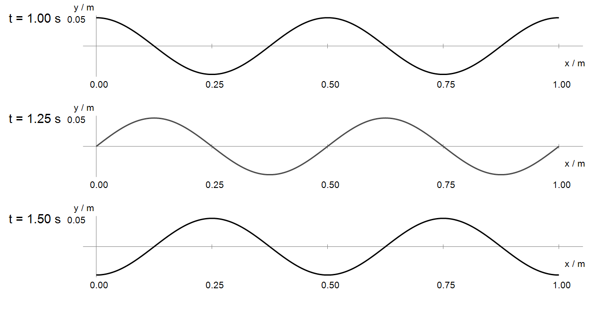
一平面简谐波在媒质中以速度u=30cm/s自左向右传播。已知波线上某点A的振动表达式为y=3 cos(4πt−π)（SI），D点在A点的右方9m处，取x轴方向水平向右。（1）以A为坐标原点，求波函数，并写出D点的振动表达式；（2）以A点左方5m处的O点为原点，写出波函数和D点的振动表达式。
坐标原点改变不改变实际振动。
原题u=30 cm/s=0.30 m/s，振动式标SI，故振幅按3 m使用，保留原题单位。k=ω/u=40π/3 rad/m。 （1）以A为原点，y=3 cos[4πt−(40π/3)x−π] m；D在x=9 m，yᴅ=3 cos(4πt−121π)=3 cos(4πt−π) m。 （2）以O为原点，A坐标5 m，D坐标14 m，y=3 cos[4πt−(40π/3)(x−5)−π] m；D点仍为3 cos(4πt−121π) m。
图11-3为一沿x轴正向传播的平面余弦波在t=1/3s时的波形，其周期T=2s。求：（1）O点和P点的振动表达式；（2）波函数；（3）P点离O点的距离。
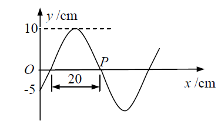
波形是固定时刻的空间分布。
图中相邻上、下过零点相距20 cm，故λ=40 cm，A=10 cm，ω=π rad/s，k=5π rad/m。t=1/3 s时，O点位移−A/2且空间斜率为正；沿+x传播时质点速度为负，所以该时刻O点相位2π/3，初相位π/3。 （1）yₒ=0.10 cos(πt+π/3) m；yₚ=0.10 cos(πt−5π/6) m。 （2）y=0.10 cos(πt−5πx+π/3) m。 （3）由P为该时刻向下穿越x轴的空间点，2π/3−5πxₚ=−π/2，得 OP=7/30 m≈23.33 cm。
波源作简谐振动，周期为1.0×10⁻²s，以它经平衡位置向正方向运动时为时间起点，若此振动以u=400m/s的速度沿直线传播，求：（1）距波源为8.0m处的质点P的振动表达式和初相；（2）距源为9.0m和10.0m处两点的相位差。
波源振动向外延迟传播。
题干未给振幅，以A表示。ω=200π rad/s，λ=uT=4.0 m，k=π/2 rad/m。波源 yₛ=A sin200πt。 （1）yₚ=A sin[200π(t−8/400)]=A sin(200πt−4π)。采用余弦形式为 A cos(200πt−9π/2)，初相模2π为−π/2；采用正弦形式初相模2π为0。 （2）较近的9.0 m处比10.0 m处超前 k×1.0=π/2 rad。若定义后者减前者，结果为−π/2。
一正弦式声波，沿直径为0.14m的圆柱形管行进，波的强度为9.0×10⁻³W/m²，频率为300Hz，波速300m/s。问：（1）波中的平均能量密度和最大能量密度是多少？（2）每两个相邻的、相位差为2π的同相面间有多少能量？
行波I=w̄u，瞬时总能量密度最大值为2w̄。
（1）w̄=I/u=3.0×10⁻⁵ J/m³；wₘ=6.0×10⁻⁵ J/m³。 （2）相邻同相面相距λ=u/f=1.0 m；能量 E=w̄Sλ=(3.0×10⁻⁵)π(0.14)²/4×1.0=4.62×10⁻⁷ J。一整波长内积分得到此值，与所选时刻无关。
一平面简谐声波的频率为500Hz，在空气中（ρ=1.3kg/m³）以速度u=340m/s传播。到达人耳时，振幅A=10⁻⁴cm，试求人耳接收到声波的平均能量密度和声强。
把位移振幅换成SI再平方。
A=10⁻⁴ cm=10⁻⁶ m，ω=1000π rad/s。 答案：w̄=½ρω²A²=6.42×10⁻⁶ J/m³；I=w̄u=2.18×10⁻³ W/m²。这里的A为介质质点位移振幅，并非声压振幅。
如图11-7所示，两个相干波源S₁、S₂，频率都是100Hz，振幅均为5cm，波速均为10cm/s。已知波源S₁的初相位为0，试求下列情况下，S₁、S₂连线的中垂线上P点的振动表达式。（1）S₁、S₂的相位差为0；（2）S₂相位超前S₁相位π/2；（3）S₁、S₂的相位差为π。
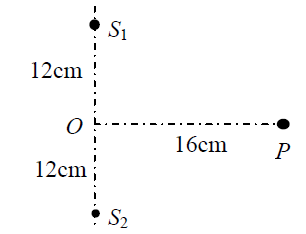
等程点的相位差等于波源初相差。
由图S₁O=S₂O=12 cm、OP=16 cm，r₁=r₂=20 cm；λ=u/f=0.10 cm，传播相位2πr/λ=400π，可略去整周。按题意采用两路在P点的振幅均为5 cm的模型。 （1）yₚ=10 cos200πt cm。 （2）yₚ=5 cos200πt+5 cos(200πt+π/2)=5√2 cos(200πt+π/4) cm。 （3）两路完全反相，yₚ=0。
如图11-8所示，两个相距为D的相干波源S₁、S₂，它们振动的相位相同，固定探测器在S₁、S₂的垂直平分线上距波源L处的O点得相长干涉（即互相加强），若探测器往上移动，到距离O点为h的P处首次得到相消干涉。设L比D及h都大得多，求波长λ。（提示：r₁+r₂≈2L）
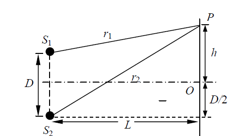
同相源第一次相消的程差为λ/2。
由几何关系 r₂²−r₁²=(h+D/2)²−(h−D/2)²=2Dh；因此 r₂−r₁=2Dh/(r₁+r₂)≈Dh/L。 答案：λ/2=Dh/L，即 λ≈2Dh/L。近似条件正是L≫D、h。
同一介质中的两个波源位于A、B两点，其振幅相等，频率都是100Hz，B的相位比A超前π。若A、B两点相距为30m，波在介质中的传播速度为400m/s。问在AB连线上A的左侧和B的右侧能出现因干涉而静止的点吗？试求出AB连线上因干涉而静止的各点位置。
把波源初相差和路程引起的相差一起计算。
λ=4 m，k=π/2 rad/m。以A为x=0、B为x=30 m，在两源间，到达相差为 Δφ=π−k(30−x)+kx=πx−14π。相消条件Δφ=(2n+1)π，得 x=1、3、5、…、29 m，共15点。 两源外侧程差固定为30 m，相差分别为−14π或16π，均为2π的整数倍，因此没有干涉静止点。上述静止结论采用题设理想等幅相干波的模型。
一弦上的驻波方程为y=3.0×10⁻² cos(1.6πx) cos(550πt)（SI）。（1）如将此驻波看成是由传播方向相反、振幅及波速均相等的两列相干波叠加而成的，求它们的振幅和波速；（2）求相邻波节之间的距离；（3）求t=3.0×10⁻³s时位于x=0.625m处质点的振动速度。
驻波系数是单个分波振幅的两倍，质点速度需对t求偏导。
（1）分波振幅A=1.5×10⁻² m；u=ω/k=550π/(1.6π)=343.75 m/s。 （2）λ=2π/(1.6π)=1.25 m，相邻波节距离λ/2=0.625 m。 （3）v=−0.030×550π cos(1.6πx) sin(550πt)。代入cosπ=−1、sin1.65π≈−0.8910，得v≈−46.19 m/s，负号表示沿y负方向运动。
设入射波函数为y入=A cos[2π(t/T+x/λ)+π/2]，在弦上传播并在x=0处发生反射，反射点为自由端。试求（1）反射波的波函数；（2）合成波方程；（3）波腹、波节的位置。
自由端位移反射不倒相。
（1）y反=A cos[2π(t/T−x/λ)+π/2]。 （2）y=2A cos(2πx/λ) cos(2πt/T+π/2)。 （3）波腹满足x=nλ/2；波节满足x=(2n+1)λ/4，n为整数，仅保留弦实际存在区间内的坐标。自由端x=0为波腹。
如图11-12所示，设从O点发出一沿x轴正向传播的平面简谐波，其频率为ν，振幅为A，波速为u，当O点运动到正方向最大位移处开始计时。（1）写出波函数；（2）距O点L处有一反射壁，在反射处有半波损失，写出反射波函数；（3）设L和波长λ之比为100，求x=L/2处的振动规律。
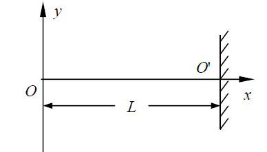
反射壁位于x=L，反射路程为2L−x；固定壁位移反射倒相。
令ω=2πν、k=ω/u。 （1）y入=A cos(ωt−kx)。 （2）y反=−A cos[ωt−k(2L−x)]，也可在余弦相位中加π。 （3）两波叠加：y=2A sin(ωt−kL) sin[k(x−L)]。L/λ=100时，在x=L/2处有sin(−100π)=0，故y=0，为波节。结论针对反射波已经到达、驻波已形成的区域。
用安装在火车站铁道旁的仪器，测得火车驶近车站时和离开车站时火车汽笛的频率分别为410Hz和380Hz，求火车速度。（已知空气中的声速为u=330m/s）
观察者静止、声源运动的多普勒效应。
设汽笛本征频率f₀，410=f₀u/(u−v)，380=f₀u/(u+v)。消去f₀：v/u=(410−380)/(410+380)。 答案：v=330×30/790≈12.53 m/s≈45.11 km/h。
本次复习跳过此题的拍频内容。完整资料仍保留供查阅。
一静止波源向一飞行物发射频率为νₛ=30kHz的超声波，飞行物以速度v离开波源飞出，站在波源处相对波源静止的观察者测得波源发射波与飞行物反射波两振动合成的拍频为νᵦ=100Hz，已知声速u=340m/s，试计算飞行物的运动速度。
移动反射体有两次多普勒频移。
飞行物先作为远离观察者接收f₁=fₛ(u−v)/u，再作为远离声源反射，返回波频率 f反=fₛ(u−v)/(u+v)。 拍频 fᵦ=fₛ−f反=2fₛv/(u+v)，故v=ufᵦ/(2fₛ−fᵦ)。 答案：v=340×100/(60000−100)=0.5676 m/s。
在双缝干涉实验中，两缝的间距为0.6mm，照亮狭缝的光源是汞弧灯加上绿色滤光片。在2.5m远处的屏幕上出现干涉条纹，测得相邻两明条纹中心的距离为2.27mm。试计算入射光的波长。
远场双缝条纹间距。
λ=dΔx/D=(0.6×10⁻³)(2.27×10⁻³)/2.5。 答案：λ=5.448×10⁻⁷ m=544.8 nm，约545 nm。
如图12-2所示，波长λ=550nm的单色光射在相距d=2×10⁻⁴m的双缝上，屏到双缝的距离D=2m，求：（1）相邻明条间的距离；（2）中央明纹两侧的两条第10级明纹中心的间距；（3）如用一厚度为e=6.6×10⁻⁶m，折射率为n=1.58的云母片覆盖上面的一条缝，零级明纹将向什么方向移动？移到原来的第几级明纹处？
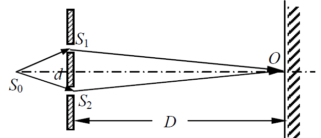
条纹级次和薄片光程。
（1）Δx=λD/d=5.50 mm。 （2）两侧±10级相距20Δx=110 mm。 （3）上缝增加光程(n−1)e，零级明纹向上、向覆盖云母的上缝移动。移动条纹数 N=(n−1)e/λ=0.58×6.6×10⁻⁶/(550×10⁻⁹)=6.96，位移38.28 mm。严格说位于原第6.96级对应的位置，按数据精度可说约原第7级明纹处，不把6.96无条件写成整数7。
在双缝干涉实验中，单色光源S₀到两缝S₁和S₂的距离分别为l₁和l₂，并且l₁−l₂=3λ，λ为入射光的波长，双缝之间的距离为d，双缝到屏幕的距离为D，如图12-3所示。求：（1）零级明纹到屏幕中央O的距离；（2）相邻明条间的距离。
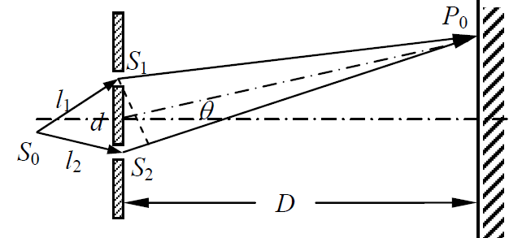
源到缝的初始光程差也须计入。
取屏幕向S₁一侧为x正向，两路总光程差 Δ=l₁−l₂+r₁−r₂≈3λ−dx/D。 （1）零级是总光程差为0，而不是只看屏中央：x₀=3λD/d，位于O的S₁一侧，距离3λD/d。 （2）相邻明纹总光程差改变λ，故Δx=λD/d。虽然O点因Δ=3λ也为明纹，但它不是本题定义的零级明纹。
在双缝干涉实验中，单色光源S₀到两缝S₁和S₂的距离分别为l₁和l₂，并且l₁−l₂=3λ，λ为入射光的波长，双缝之间的距离为d，双缝到屏幕的距离为D，如图所示。欲使零级明条纹移回到O点，应在哪个缝处覆盖一薄云母片才有可能？若用波长589nm的单色光，云母片的厚度应为多少？已知云母片的折射率为1.58。
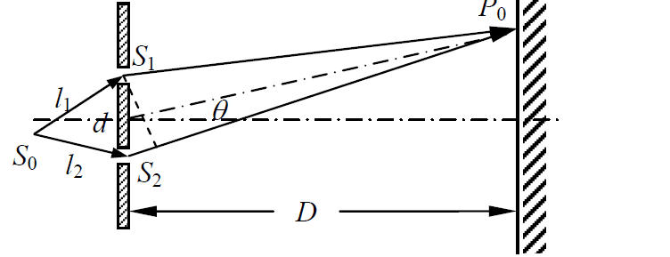
用薄片补偿原有两路光程差。
O点处原来经S₁一路比经S₂一路长3λ，因此应在较短的S₂一路覆盖云母片，使(n−1)e=3λ。 答案：覆盖S₂缝；e=3×589 nm/(1.58−1)=3046.55 nm≈3.05 μm。仅让O点为某级明纹有更多厚度选择；本题要求零级回O，所以必须总光程差为0。
以白光垂直照射到空气中的厚度为d=380nm的肥皂水膜上，肥皂水的折射率为n=1.33，试分析肥皂水膜的正面和背面各呈现什么颜色？
空气—膜—空气体系，反射两光束有一次半波损失。
取正面为反射、背面为透射。 反射增强：2nd=(m+½)λ，即λ=2021.6/(2m+1) nm。在常用可见范围400～760 nm内，有673.9 nm（红）和404.3 nm（紫）；故正面反射含红、紫增强成分，不能只写单一红光。 透射增强：2nd=mλ，λ=1010.8/m nm，可见光为505.4 nm（绿），背面主要呈绿。实际综合色还受光源谱和人眼响应影响。
（1）有一层折射率为1.33的薄油膜，当我们的观察方向与膜面的法线方向成30°角时，可看到由油膜反射的光呈波长为500nm的绿色光。试问油膜的最薄厚度为多少？（2）如果从膜面的法线方向观察，则反射光的颜色如何？
斜入射薄膜干涉与折射。
按薄油膜两侧为空气、反射有一次半波损失的通常模型，sinr=sin30°/1.33。最薄非零反射增强膜厚满足2ne cosr=λ/2。 （1）e=500/[4√(1.33²−0.5²)] nm=101.43 nm。 （2）正视时一级增强波长λ₀=4ne≈539.6 nm，仍为绿色，较500 nm向长波方向移动。若油膜下方另有未说明介质，须重新判定半波损失；此数值对应上述常用模型。
让光从空气中垂直照射到覆盖在玻璃板上的厚度均匀的薄油膜上，所用光源的波长在可见光范围内连续变化时，只观察到500nm与700nm两个波长的光相继在反射光中消失。已知空气的折射率为1.00，油的折射率为1.30，玻璃的折射率为1.50，试求油膜的厚度。
两次反射均从低折射率侧向高折射率侧，两束反射光各有π相变，相对半波损失为0。
反射消失条件2ne=(m+½)λ。两个消失波长相继出现，对应相邻级：2ne=(m+½)700=(m+3/2)500（nm）。解得m=2，2ne=1750 nm。 答案：e=1750/(2×1.30)=673.08 nm≈6.73×10⁻⁷ m。相邻下一消失波长388.9 nm；此结果采用教材通常把可见范围下限取约400 nm的口径。
在空气中垂直入射的白光从肥皂膜上反射，在可见光谱中630nm处有一干涉极大，而在525nm处有一干涉极小，在这极大与极小之间没有另外的极小。假定膜厚是均匀的，求这膜的厚度。肥皂水的折射率看作与水相同，为1.33。
一次半波损失时反射极大2ne=(m+½)λ，极小2ne=kλ。
两波长之间无另一个极小，因525<630，取k=m+1。由630(m+½)=525(m+1)，得m=2、k=3，2ne=1575 nm。 答案：e=1575/(2×1.33)=592.11 nm≈5.92×10⁻⁷ m。
长l₀=12cm的两玻璃片的一边相互接触，另一边用直径D=4.760×10⁻⁵m的细金属丝隔开。以λ=680nm的平行光垂直照射其上，试问（1）两暗纹的高度差Δd以及它们之间的距离l为多少？（2）在这12cm内呈现多少条暗条纹？（3）如金属丝受热膨胀，在劈的中点P观察到有4条暗纹移过，则金属丝直径膨胀了多少？
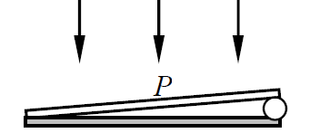
空气劈尖反射暗纹2e=mλ，膜厚与距接触边距离成正比。
（1）相邻暗纹厚度差Δd=λ/2=340 nm；间距l=l₀λ/(2D)=0.85714 mm。 （2）2D/λ=140，故从接触边m=0到金属丝侧m=140共有141个暗纹中心，覆盖140个条纹间隔。如果教材不计接触边的零级暗纹，则报140条；两种计数的边界口径需注明。 （3）中点膜厚变化Δeₚ=ΔD/2；4条暗纹移过满足2Δeₚ=4λ，故ΔD=4λ=2.72 μm。不可把中点膜厚变化直接当金属丝直径变化。
利用空气劈的等厚干涉条纹，可以测量工件表面加工的情况。如图12-10所示，工件与一平晶形成空气劈尖，以波长λ的单色光垂直照射，观察到的条纹如图。问（1）不平处是凹的还是凸的？（2）证明凹凸不平的深度（高度）为H=(a/b)(λ/2)。 原图未提供。
同类条纹膜厚差为λ/2；将条纹横移a与正常间距b比较，可得表面高度差H=(a/b)(λ/2)。
（1）上传图片没有图12-10的劈尖方向与条纹弯曲图，不能唯一判断凹凸。需依据同一条纹保持膜厚不变，并结合厚度增加方向判断。 （2）知识点：相邻同类条纹对应膜厚差λ/2。设条纹正常间距为b，劈尖斜率α≈λ/(2b)；表面高度扰动使同级条纹横移a，则高度绝对值H=αa=(a/b)(λ/2)。此证明中的a为条纹横向偏移、b为相邻同类条纹间距；原图缺失，不能核实图上字母位置及凹凸符号。
使用单色光来观察牛顿环，测得某一明环的直径为3.00mm。在它外面第5个明环的直径为4.60mm，所用平凸透镜的曲率半径为1.03m，求此单色光的波长。
牛顿环相隔p级的直径平方差为4pλR，不必知道原环级数。
D外²−D内²=4×5λR。 答案：λ=[(4.60×10⁻³)²−(3.00×10⁻³)²]/(20×1.03)=5.9029×10⁻⁷ m≈590 nm。
如图12-12所示，牛顿环装置的平凸透镜与平板玻璃有一小缝隙e₀，现用波长为λ的单色光垂直照射，已知平凸透镜的曲率半径为R，求反射光形成的牛顿环的各暗环半径。
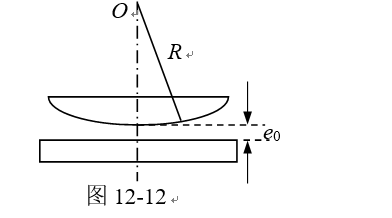
中心有间隙时不能令中心膜厚为0。
小角近似下e(r)=e₀+r²/(2R)，空气膜反射暗纹满足2e=mλ。 答案：rₘ=√[R(mλ−2e₀)]，m为整数，并须mλ≥2e₀。等号对应中心暗点r=0；实际暗环要求r>0。若要从最内暗环重新编号，可令m取严格大于2e₀/λ的最小整数后依次递增。
如图12-13所示，折射率n₁=1.50的平板玻璃上有一折射率n₂=1.20的油膜，在波长λ=600nm的单色平行光垂直照射下，观察到油膜反射光的干涉条纹。问：（1）当油膜中心最高点与玻璃片上表面相距1200nm时，看到怎样的干涉条纹（条纹形状、明条纹数、中心和边缘处的明暗情况）？各明纹所在处的油膜厚度为多少？（2）当油膜继续扩大时，条纹情况将如何变化？
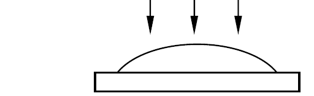
空气→油→玻璃两次反射都倒相，相对无额外π相位。
若油滴轴对称、厚度从中心向边缘连续减小，等厚条纹为同心圆环。反射增强满足2n₂e=mλ，故e=250m nm。 （1）0≤e≤1200 nm，增强厚度为0、250、500、750、1000 nm：膜内有4条亮环，边缘e=0也是亮边；若把亮边计为一条，共5条。中心2n₂e/λ=4.8，并非明暗极值，不能硬判为中心明纹或暗纹；暗纹厚度125、375、625、875、1125 nm。 （2）题干没有规定扩大时的体积、中心厚度与径向形状变化，不能唯一确定每条环的移动方向。若按固定油量逐渐摊薄的模型，中心可容纳的最高干涉级次下降，条纹数逐步减少，内环可在中心消失；各环半径的具体变化仍须厚度分布。若教材另假定膜厚增加，则级次增加，结论不同。
迈克耳逊干涉仪可用来测量单色光的波长，当M₂移动距离d=0.3220mm时，测得单色光的干涉条纹移过N=1204条，试求该单色光的波长。
动镜移动d，往返光程差改变2d，Nλ=2d。
答案：λ=2×0.3220×10⁻³/1204=5.34884×10⁻⁷ m≈534.9 nm。
一单色平行光束垂直照射在宽为1.0mm的单缝上，在缝后放一焦距为2.0m的会聚透镜。已知位于透镜焦面处的屏幕上的中央明条纹宽度为2.5mm。求入射光波长。
中央亮纹宽度是两侧一级暗纹之间的距离。
W=2fλ/a。 答案：λ=Wa/(2f)=(2.5×10⁻³)(1.0×10⁻³)/(2×2.0)=6.25×10⁻⁷ m=625 nm。
一单色平行光垂直入射一单缝，其衍射第三级明纹位置恰与波长为600nm的单色光垂直入射该缝时衍射的第二级明纹位置重合，求该单色光波长。
这里是单缝次级明纹，不能误用光栅的mλ公式。
教材半波带近似给出a sinθ≈(m+½)λ，同一θ满足(3+½)λ=(2+½)×600 nm。 答案：按通常教材近似，λ=3000/7 nm≈428.6 nm。若按精确衍射强度极值tanβ=β，第二、第三侧极大分别β₂≈7.72525、β₃≈10.90412，则λ=600β₂/β₃≈425.1 nm。二者差别源于明纹位置近似。
如图12-17所示，设有一波长为λ的单色平面光波沿着与单缝平面的法线成φ角的方向入射于宽度为a的单缝上，确定各暗纹的衍射角应满足的条件。
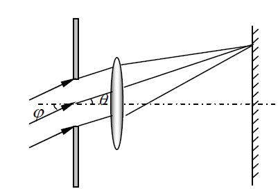
斜入射时须扣除入射到缝内各点的相位差。
采用入射传播方向与观察方向相对同一法线、同一正向的有符号角，缝两端光程差Δ=a(sinθ−sinφ)。 答案：a(sinθ−sinφ)=mλ，m=±1、±2、…；且−1≤sinφ+mλ/a≤1。若把图中的φ规定为法线另一侧的正角，式子相应写为a(sinθ+sinφ)=mλ。m=0对应主极大方向θ=φ，不是暗纹。
平行光垂直入射在宽度a=0.6mm的单狭缝上，如图12-18所示。已知薄透镜的焦距f=40cm。如果在透镜主光轴与屏之交点O和距O点1.4mm的P点看到的是亮纹，求：（1）入射光的波长；（2）P点条纹的级数；（3）从P点看，对该光波而言，狭缝处的波阵面可看作的半波带的数目；（4）若P点看到的是暗纹，入射光的波长为何？
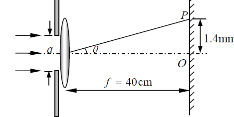
仅给一个亮纹位置，未给级次，不能唯一求λ。
小角近似a sinθ≈ax/f=2.10×10⁻⁶ m。 （1）按半波带近似，亮纹a sinθ≈(m+½)λ，m=1、2、…，故λ≈4.20×10⁻⁶/(2m+1) m。 （2）P为第m级侧亮纹，m待定；如另限定400～760 nm可见范围，m=3、4，对应λ≈600、466.7 nm。 （3）半波带数约2m+1；上述可见候选分别为7和9。精确次极大应用tanβ=β，而非把半波带近似视为精确等式。 （4）暗纹满足a sinθ=kλ，λ≈2.10×10⁻⁶/k m，k=1、2、…；在400～760 nm内可取k=3、4、5，对应700、525、420 nm。原题未给级数或光谱范围，以上均保留多解。
在迎面驶来的汽车上，两盏前灯相距120cm。问汽车离人多远时，人眼恰能分辨这两盏前灯？设夜间人眼瞳孔直径为5.0mm，入射光波长为550nm，且只考虑人眼瞳孔的衍射效应。
圆孔瑞利分辨极限。
两灯角间距约s/L，恰分辨时s/L=1.22λ/D。 答案：L=sD/(1.22λ)=1.20×0.0050/(1.22×550×10⁻⁹)≈8.94×10³ m=8.94 km。此为题设只计衍射的理想极限。
一双缝，缝间距d=0.10mm，缝宽a=0.02mm，用波长λ=480nm的平行单色光垂直入射该双缝，双缝后放一焦距为50cm的透镜。求：（1）透镜焦平面处屏上干涉条纹的间距；（2）单缝衍射中央亮纹的宽度；（3）单缝衍射的中央包线内干涉主极大数。
双缝干涉主极大受到单缝衍射包络限制。
（1）Δx=fλ/d=2.40 mm。 （2）W=2fλ/a=24.0 mm。 （3）中央包络要求|sinθ|<λ/a，而主极大sinθ=mλ/d，因此|m|<d/a=5。m=0、±1、±2、±3、±4，共9个；m=±5位于单缝暗纹处，缺级，不计。
一光栅，宽为2.0cm，共有6000条缝。如用钠光（589.3nm）垂直入射，问：（1）在哪些角度出现光强极大？共出现多少条明纹？（2）如钠光与光栅的法线方向成30°角入射，最多能观察到第几级条纹？共出现多少条明纹？
光栅常数是总宽度除以缝数。
d=0.020/6000=3.3333 μm，d/λ≈5.656. （1）sinθ=mλ/d，m=0、±1、…、±5。角度为0°及±10.183°、±20.706°、±32.030°、±45.004°、±62.123°；共11条几何允许的主极大。 （2）采用有符号角sinθ=sin30°+mλ/d，由−1<sinθ<1得m=−8、−7、…、2，共11条；最大绝对级次为8级，出现在入射方向相反一侧。未给缝宽，无法进一步排除单缝包络导致的缺级。
每厘米有3000条刻痕的光栅，其刻痕宽度与透光缝宽相等。以波长λ=546nm的单色平行光垂直入射到光栅上，问：（1）第一级明条纹的衍射角是多少？（2）最多能观察到多少条明条纹？
缝宽a=d/2时偶数级光栅主极大缺级。
d=1/(3.0×10⁵)=3.3333×10⁻⁶ m。 （1）θ₁=arcsin(λ/d)=9.428°，另一侧为−9.428°。 （2）几何允许|m|≤6，但m=±2、±4、±6与单缝暗纹重合；留下m=0、±1、±3、±5，共7条。
波长为600nm的单色光垂直入射在一光栅上，第二和第三级明条纹分别出现在sinθ=0.20与sinθ=0.30处，第四级缺级。求：（1）光栅常数；（2）光栅上狭缝宽度；（3）屏上实际呈现的全部级数。
缺级说明光栅主极大与某一级单缝暗纹重合。
（1）d=2λ/0.20=3λ/0.30=6.00 μm。 （2）教材通常默认第四级落在单缝一级暗纹：4λ/d=λ/a，得a=d/4=1.50 μm。严格地，题干没有说明对应哪一级单缝暗纹；令4a/d=j，0<a<d，j=1、2、3。其中j=2会使已观察到的第二级缺级，排除；j=3给a=4.50 μm也与已知相容。因此仅凭原题可得a=1.50或4.50 μm，选1.50 μm需加上述通常假设。 （3）两种候选都使4的倍数级缺级。有限屏上|m|<d/λ=10，实际为m=0、±1、±2、±3、±5、±6、±7、±9，共15条。m=±10对应90°掠射，是形式上的极限方向，不落到有限远屏。
光栅衍射实验中将波长λ=540nm的光垂直照射在光栅上，衍射光光强分布如图所示，θ为衍射角，sinθ=0.30及sinθ=0.60时有主极大缺级，θ=arcsin0.3对应于单缝衍射中央明纹的边界，则光栅的狭缝总数N、光栅常数d以及狭缝宽度a分别为多少？最多能观察到哪些级数的条纹？
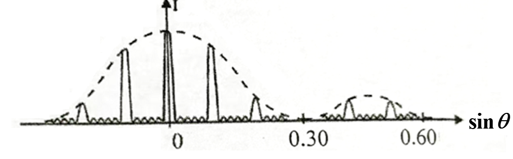
相邻主极大间有N−2个次极大；图中可辨4个次极大，故N=6。
0至sinθ=0.30之间有两条非零主极大，0.30处缺失的是第3级，因而d×0.30=3λ。单缝一级暗纹a×0.30=λ。 答案：N=6，d=5.40 μm，a=1.80 μm；d/a=3，所以3的倍数级缺级。几何极限d/λ=10，有限屏上可见m=0、±1、±2、±4、±5、±7、±8，共13条。m=±10在90°掠射方向，仅是理论极限，不落到有限远屏；若教材将其形式计入，则再增加这两级。
已知某种质材料在空气中的布儒斯特角i₀=58°。（1）求它的折射率；（2）如果把它放在水中（n水=1.33），其布儒斯特角变为多少？它相对水的折射率为多少？
布儒斯特定律使用相对折射率tan iᴮ=n出/n入。
（1）材料相对空气折射率n=tan58°≈1.6003。 （2）相对水折射率n/n水=1.6003/1.33≈1.2033，水中布儒斯特角iᴮ=arctan1.2033≈50.27°。
一束自然光以58°角入射至玻璃表面，发现反射光为完全线偏振光，求：（1）折射光的折射角；（2）玻璃的折射率。
自然光反射后完全偏振说明入射角为布儒斯特角，反射光与折射光垂直。
（1）r=90°−58°=32°。 （2）从空气入射，n=tan58°≈1.6003。角度均相对界面法线。
如图12-30所示，一束线偏振光沿AO从空气射到玻璃（n₂>n₁），iᴮ为空气到玻璃的布儒斯特角，i₁为折射角，试问：（1）入射光的振动方向平行于入射面时，有无反射光？为什么？（2）如该光束沿BO入射（从玻璃到空气）有无反射光？为什么？（3）如光仍沿AO入射，但振动方向与入射面垂直，用点和短划线画出反、折射光偏振示意图？
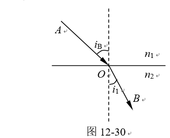
p偏振平行入射面，s偏振垂直入射面；布儒斯特角处p反射系数为0。
（1）无反射光，因为沿AO以iᴮ入射且为p偏振。 （2）把同一束光反向沿BO传播，入射角为i₁=90°−iᴮ。tan i₁=n₁/n₂，恰为玻璃到空气的布儒斯特角，仍为p偏振，所以也无反射光。 （3）沿AO的s偏振通常同时有反射和折射，两束都为s偏振；以纸面为入射面，在反射和折射光线上均画点“•”表示电场垂直纸面，均不画表示p分量的短划线，见附图。
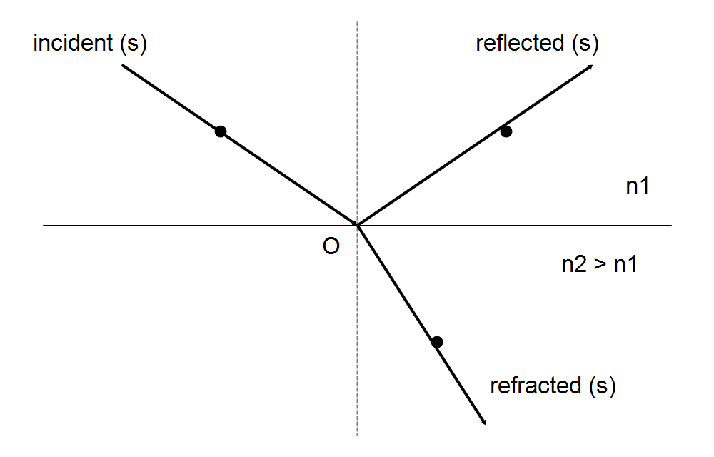
有两个偏振片分别作为起偏振器和检偏振器。它们的偏振化方向夹角为30°时观察一束单色自然光。当夹角为60°时观察另一束单色自然光，发现从检偏振器透射出的两束光强度相等。求这两束自然光的强度之比。
自然光过起偏器先减半，之后用马吕斯定律。
设第一束入射强度Iₐ、第二束Iᵦ，则(Iₐ/2) cos²30°=(Iᵦ/2) cos²60°。 答案：Iₐ/Iᵦ=cos²60°/cos²30°=1/3。
使自然光通过两个偏振化方向成60°角的偏振片，透射光强为I₁。今在这两个偏振片之间再插入另一偏振片。它的偏振化方向与前两个偏振片均成30°角，则透射光强为多少？
依次对相邻偏振片使用cos²夹角。
设原自然光I₀，原来I₁=(I₀/2) cos²60°=I₀/8。插片后I=(I₀/2) cos²30° cos²30°=9I₀/32。 答案：I=(9/4)I₁。
一束自然光和线偏振光混合的光，垂直射入偏振片。若把偏振片以入射光为轴旋转一周，发现透射光的强度最大值是最小值的5倍，试求入射光中自然光和线偏振光的光强比值？
自然光透过强度不随偏振片角度变，线偏振部分满足马吕斯定律。
I最大=I自然/2+I线，I最小=I自然/2。由I最大=5I最小，得I线=2I自然。 答案：I自然/I线=1/2。
在两正交偏振片之间，有一理想偏振片以光传播方向为轴旋转，角速度为ω。证明自然光通过这一系统后，出射光强的变化频率被调制为旋转频率的四倍。即证明：I=I₁/8(1−cos4ωt)。其中I₁为第一个偏振片后的出射光强；I为最后一个偏振片后的出射光强。
正交首末偏振片与旋转中间片。
以中间片在t=0与第一片平行为相位约定，角度θ=ωt。 先过中间片I中=I₁ cos²θ，再过末片I=I中 cos²(π/2−θ)=I₁ cos²θ sin²θ=(I₁/4) sin²2θ=(I₁/8)(1−cos4ωt)。 旋转频率f旋=ω/(2π)，光强变化频率f光=4ω/(2π)=4f旋。一般初始角θ₀只使余弦相位增加4θ₀，不改变四倍频结论。
一子弹的质量为m=0.01kg，速率为v=300m/s，计算其德布罗意波长。
宏观物体仍满足德布罗意关系，但波长极小。
p=mv=3.0 kg·m/s。 答案：λ=h/(mv)=6.62607015×10⁻³⁴/3.0=2.21×10⁻³⁴ m。
一个电子的动能等于它的静能，试求该电子的速率和德布罗意波长。
K=mc²时必须用相对论。
K=(γ−1)mₑc²=mₑc²，所以γ=2，v=c√(1−1/γ²)=(√3/2)c。总能量E=2mₑc²，p²c²=E²−mₑ²c⁴=3mₑ²c⁴。 答案：v=2.5963×10⁸ m/s；λ=h/(√3mₑc)=1.4008×10⁻¹² m=1.4008 pm。
计算动能分别为1.0KeV、1.0MeV、1.0GeV的电子的德布罗意波长。
统一使用相对论公式λ=hc/√[K(K+2mₑc²)]，mₑc²≈510.999 keV。
原题写作KeV，计算按keV即10³ eV解释。 答案：K=1.0 keV时λ=3.8764×10⁻¹¹ m（38.764 pm）；K=1.0 MeV时λ=8.7192×10⁻¹³ m（0.87192 pm）；K=1.0 GeV时λ=1.2392×10⁻¹⁵ m（1.2392 fm）。后两项不能用非相对论动量公式。
一束带电粒子经206V电压加速后，测得其德布罗意波长为2.0×10⁻³nm，已知该粒子所带的电荷量与电子电荷量相等，求这粒子的质量。
通常“经电压加速”按初动能可忽略解释，K=eU=p²/(2m)，p=h/λ。
λ=2.0×10⁻¹² m。 答案：m=h²/(2eUλ²)=1.6628×10⁻²⁷ kg，约1个原子质量单位。若初动能不可忽略且未知，则单凭原题数据不能唯一求质量；此解采用题目通常的从静止加速模型。
一个光子的波长为3.0×10⁻⁷m，如果测定此波长的精确度Δλ/λ=10⁻⁶，试求测定此光子位置的不确定量。
光子p=h/λ，小相对误差下Δp≈hΔλ/λ²。
由标准差不确定关系ΔxΔp≥ħ/2，得Δx≥λ²/(4πΔλ)=λ/[4π(Δλ/λ)]。 答案：标准差形式给出最小可能下界Δx≥2.39×10⁻² m，不能由此认定实际不确定量恰等于下界。若课本以ΔxΔp≈h作数量级估算，则Δx≈λ/(Δλ/λ)=0.30 m。两数使用的常数口径不同。
设粒子沿x轴运动时，速率的不确定量为Δv=1cm/s，试估算下列情况下坐标的不确定量Δx：（1）电子；（2）质量为10⁻¹³kg的布朗粒子；（3）质量为10⁻⁴kg的小弹丸。
非相对论且质量确定时Δp=mΔv，Δv=0.010 m/s。
标准差下界Δx≥ħ/(2mΔv)。 答案：（1）电子Δx≥5.79×10⁻³ m；（2）布朗粒子Δx≥5.27×10⁻²⁰ m；（3）小弹丸Δx≥5.27×10⁻²⁹ m。 若教材按数量级ΔxΔp≈h估算，则三项约为7.27×10⁻² m、6.63×10⁻¹⁹ m、6.63×10⁻²⁸ m。宏观粒子的下界极小。
试证：如果粒子位置的不确定量等于其德布罗意波长，则其速度的不确定量大于或等于其速度（不确定性关系：Δx·Δp≥h）。
把德布罗意关系λ=h/p与题给ΔxΔp≥h联立；非相对论下Δp=mΔv。
本题明确指定使用ΔxΔp≥h，应按题给口径证明。Δx=λ=h/p，代入得Δp≥h/Δx=p。非相对论下p=mv、Δp=mΔv，因此Δv≥v，证毕。 适用条件：此处需要非相对论动量p=mv，并使用题给数量级不等式。若改用严格标准差关系ΔxΔp≥ħ/2，只能推出Δv≥v/(4π)，不能推出原命题；因此不得混用两种口径。
一维运动的粒子处于如下波函数所描述的状态：ψ(x)=Ax e^(−λx)（x≥0），ψ(x)=0（x<0），式中λ>0。求：（1）波函数ψ(x)的归一化常数A；（2）粒子的概率密度函数；（3）发现粒子概率的最大位置。（积分公式：∫₀^∞ x²e⁻ᵇˣdx=2/b³）
概率密度为|ψ|²，最可能位置对应密度最大。
归一化：1=|A|²∫₀^∞x²e^(−2λx)dx=|A|²×2/(2λ)³=|A|²/(4λ³)。 （1）取A为正实数，A=2λ³ᐟ²；任意整体相位不影响概率。 （2）ρ(x)=4λ³x²e^(−2λx)（x≥0），ρ(x)=0（x<0）。 （3）对x>0，d lnρ/dx=2/x−2λ=0，得x最可能=1/λ；x=0处密度为0，不是最大值。
一粒子被限制在相距为l的两个不可穿透的壁之间，如图所示，描写粒子状态的波函数为ψ=cx(l−x)，其中c为待定常量，求在0～l/3区间发现该粒子的概率。
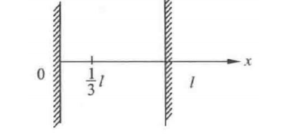
先归一化，再积分概率；不能直接积分ψ。
∫₀ˡx²(l−x)²dx=l⁵/30，所以|c|²=30/l⁵。令u=x/l，P=30∫₀^(1/3)u²(1−u)²du。 积分原函数为u³/3−u⁴/2+u⁵/5。 答案：P=17/81≈0.20988，约20.99%。可取c=√30/l⁵ᐟ²，壁外ψ=0。
一维无限深势阱中粒子的定态波函数为ψₙ=√(2/a) sin(nπx/a)。试求下列两种情况下在x=0到x=a/3之间找到粒子的概率：粒子处于（1）基态；（2）第一激发态。
无限深势阱基态n=1、第一激发态n=2。
Pₙ=(2/a)∫₀^(a/3)sin²(nπx/a)dx=1/3−sin(2nπ/3)/(2nπ)。 （1）P₁=1/3−√3/(4π)≈0.19550，约19.55%。 （2）P₂=1/3+√3/(8π)≈0.40225，约40.22%。
本次复习跳过此题的薛定谔方程代入推导。完整资料仍保留供查阅。
对简谐振子，其基态的定态波函数为ψ₀=Ae^(−ax²)，其中A、a为常数。将此式带入一维定态薛定谔方程，试根据所得的式子在x为何值时均成立的条件，得出简谐振子的零点能为E₀=hν/2，其中ν为谐振子的固有频率。
比较薛定谔方程两边各次幂系数。
取V(x)=½mω²x²，ω=2πν，ψ₀″=(4a²x²−2a)ψ₀。代入并除ψ₀，得[½mω²−2ħ²a²/m]x²+ħ²a/m=E₀。 对任意x成立，x²系数必须为0。由可归一化要求a>0，得a=mω/(2ħ)。于是E₀=ħ²a/m=ħω/2=hν/2，证毕。
在宏观世界里，量子现象常常可以忽略。试从零点能的角度在数值上求解长l=1m，质量m=1kg的单摆的零点振荡的振幅。
小角摆近似谐振子，ω=√(g/l)，零点能E₀=ħω/2。
以相同能量对应的经典转折点振幅A定义零点振幅：½mω²A²=ħω/2，A=√[ħ/(mω)]。 答案：取g=9.8 m/s²，ω≈3.1305 rad/s，A≈5.80×10⁻¹⁸ m；角振幅A/l≈5.80×10⁻¹⁸ rad。若“振幅”指基态位置标准差，则Δx=√[ħ/(2mω)]≈4.10×10⁻¹⁸ m，两定义相差√2。